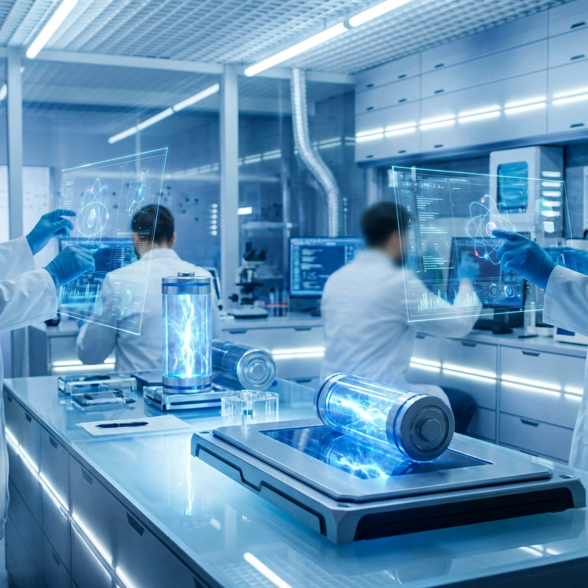

Perspektiven der Speichertechnologie
Aktuelle Trends und Forschung aus der Energiebranche.
Technologische Innovationen
Festkörperbatterien (Solid State)
Diese Batterie gilt als der nächste grosse Schritt. Statt flüssiger Chemie wird festes Material genutzt. Das macht sie viel sicherer (kaum Brandgefahr) und sie speichert mehr Energie. Erste Fabriken für die Herstellung entstehen bereits.
 INFRASTRUKTUR
INFRASTRUKTUR
Wasserstoffökonomie
Europa plant ein grosses Netz für Wasserstoff. Dafür sollen alte Gasleitungen umgebaut werden, um grünen Wasserstoff von Windparks im Meer zu den Fabriken zu bringen.
 ZIRKULÄRWIRTSCHAFT
ZIRKULÄRWIRTSCHAFT
Second-Life-Konzepte
Alte Batterien aus E-Autos haben oft noch 70-80% ihrer Leistung. Statt sie wegzuwerfen, nutzt man sie in grossen Speichern für Solarstrom weiter. Das schont Ressourcen.
Herausforderungen und Lösungsansätze
Ressourcenverfügbarkeit
Weil Rohstoffe wie Kobalt knapp werden, forscht man an Alternativen. Natrium-Ionen-Batterien nutzen zum Beispiel einfaches Salz, das es überall gibt. Das macht uns unabhängiger von Importen.
Ökonomische Skalierbarkeit
Damit Wasserstoff konkurrenzfähig wird, müssen die Anlagen zur Herstellung (Elektrolyseure) viel billiger werden. Massenproduktion und höhere CO2-Preise helfen dabei.